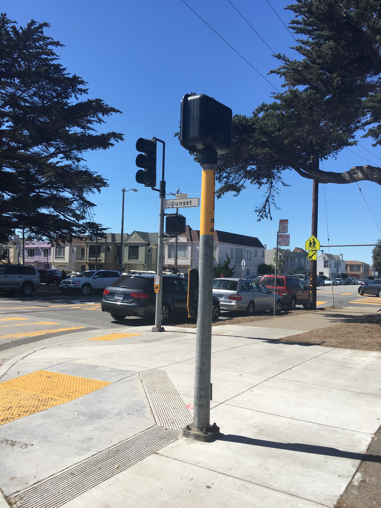
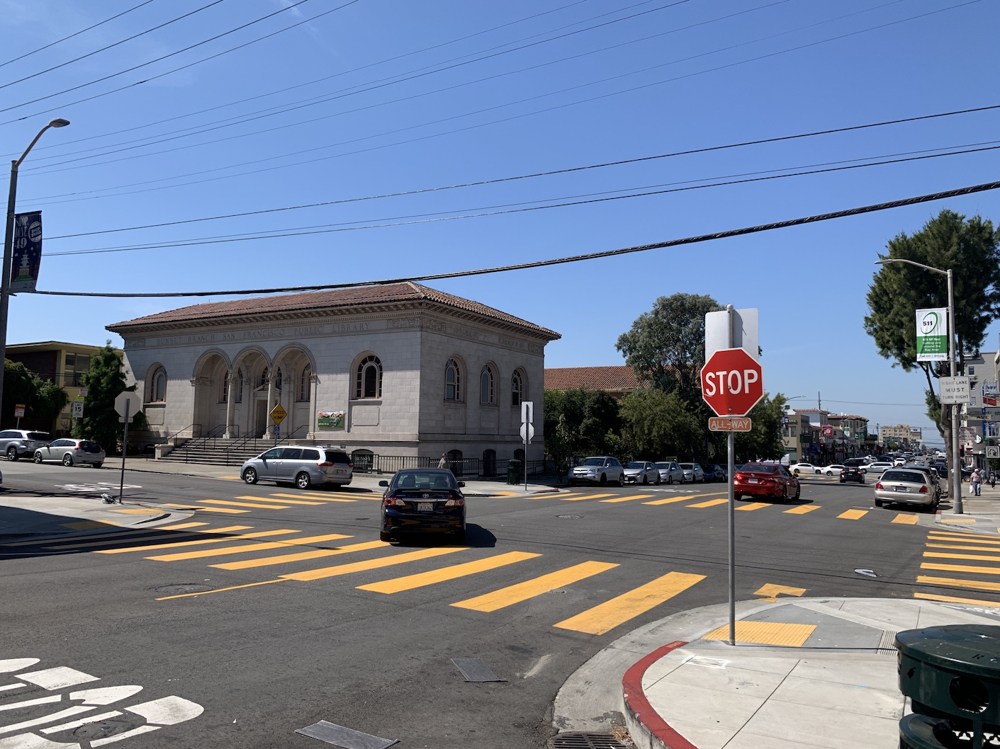
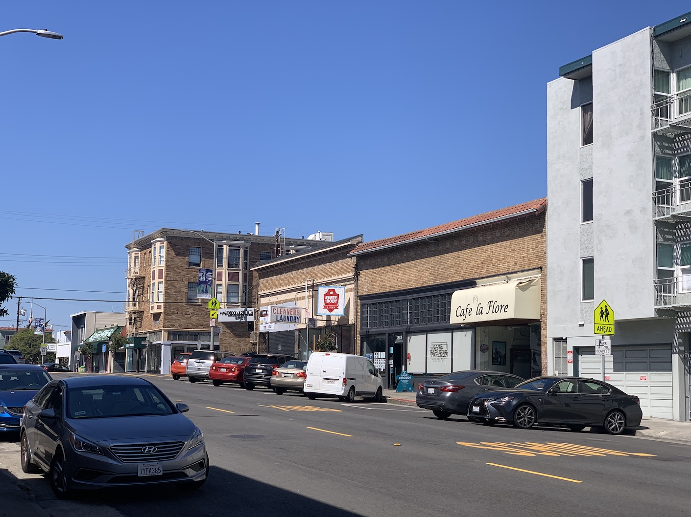
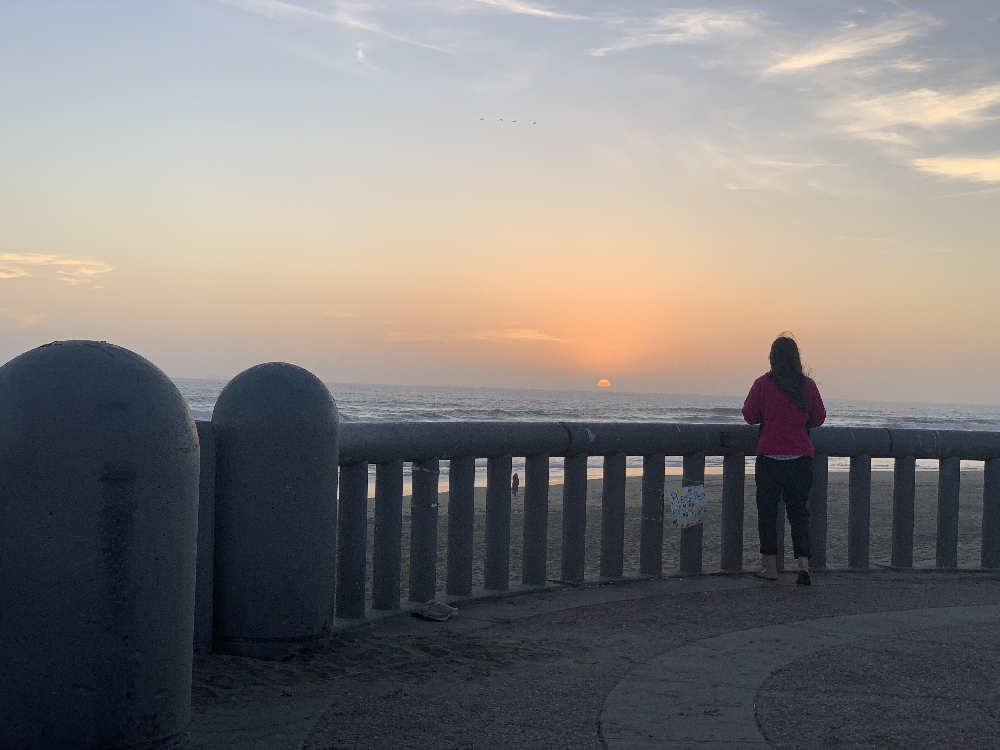

The Sunset Sessions
Ernest Charles Strauhal
The Sunset Branch of the San Francisco Public Library is an excellent place to sit down, relax, and enjoy some books and magazines. Library Website
La Flore is one of my favorite cafes to study at, and their vanilla mochas are absolutely exemplary. Yelp Website
Ocean Beach may be incredibly cold, but it's always nice to take off your shoes and feel the sand between your toes. Wikipedia Page

Grand View Park, also known as "Turtle Hill" has an amazing view of the Sunset District as well as Golden Gate Park and downtown SF. SF Park Website